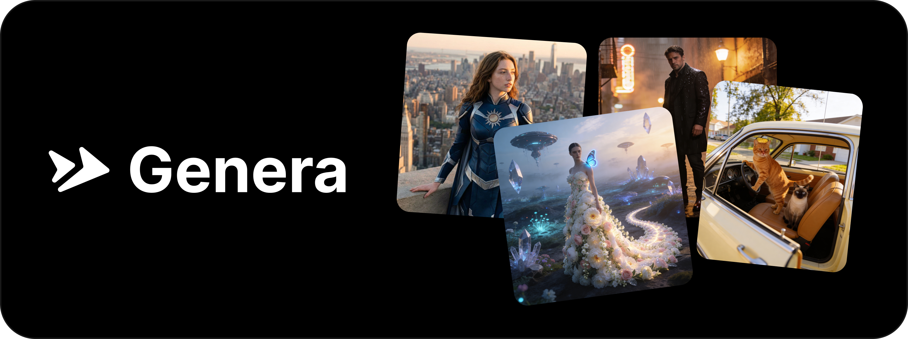
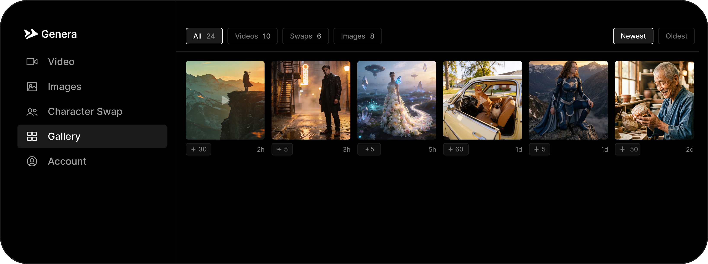
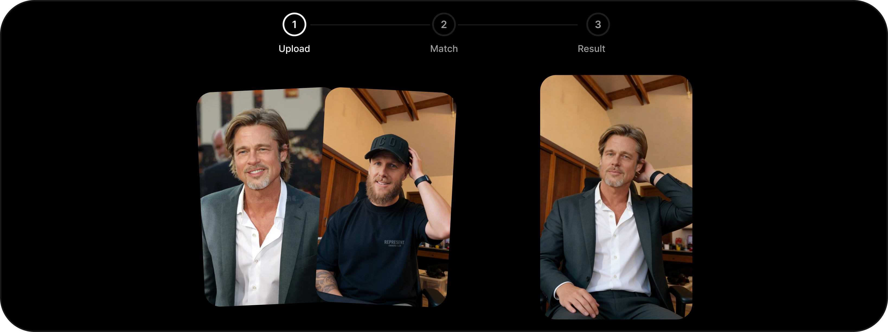
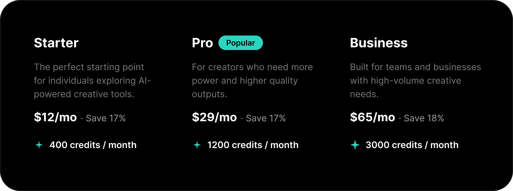

Context
AI-powered creative tools are transforming how content creators work, but most existing solutions are either too complex for non-technical users, prohibitively expensive, or lack the ability to maintain character consistency across generations. Creators need accessible tools that let them generate images, videos, and character-based content without a steep learning curve.
Genera was built to bridge this gap: an AI creative studio that simplifies video and image generation workflows while keeping character identity consistent across all outputs.
The Process
Genera was designed and developed as a solo project, from initial concept through to a live product. The focus was on creating intuitive workflows that abstract away the complexity of AI models, letting users focus on their creative vision rather than technical configuration.

Core Features
The platform offers a full suite of AI generation tools organized into three main categories:
Image Generation
Text to Image and Image to Image tools powered by models like Nano Banana 2, allowing users to create and transform visuals from prompts and reference images.
Video Creation
Text to Video and Image to Video tools that bring static concepts to life with AI-generated motion and animation.
Avatar System
Avatar Swap places a character into any video while matching the original motion and pose. Avatar Talk generates talking-head videos driven by audio input.

Avatar System
The Avatar System is Genera's core feature, making it easy to create character-driven video content at scale. Users can swap any character into a video while preserving the original motion and pose, or generate talking-head videos synced with uploaded audio.
Avatar Swap takes a character photo and a video reference, placing the character into the scene frame by frame. An outfit toggle lets users keep the character's look or adopt the clothing from the reference video.
Avatar Talk takes a character image and syncs it with audio to produce realistic lip-sync and head movement. Users can upload their own audio or generate speech from a script.

Pricing and Business Model
Genera uses a credit-based SaaS model with three tiers: Starter (400 credits/month at $12/mo), Pro (1200 credits/month at $29/mo), and Business (3000 credits/month at $65/mo). Annual billing saves up to 18%.
Higher tiers unlock features like 1080p quality, HD downloads, priority support, and team collaboration, creating clear upgrade paths as users scale their content production.
Tech Stack
Built with Next.js 16, React 19, Supabase for authentication and database, and TailwindCSS 4 for styling. The platform integrates multiple AI models for different generation tasks and supports multi-language localization.
Video processing is handled with FFmpeg and image optimization with Sharp, ensuring fast delivery of generated content across all formats.